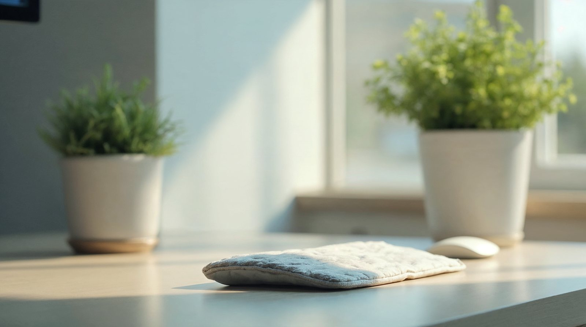
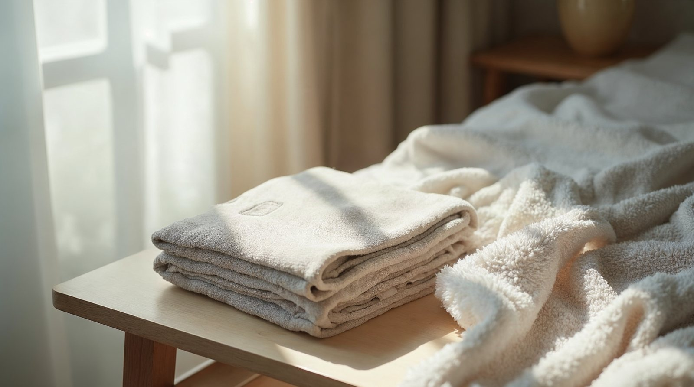
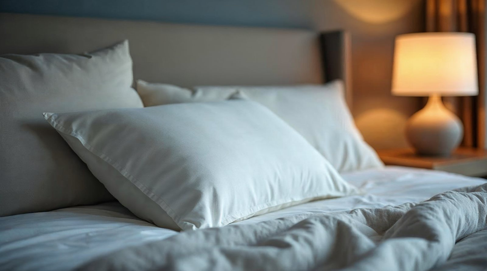
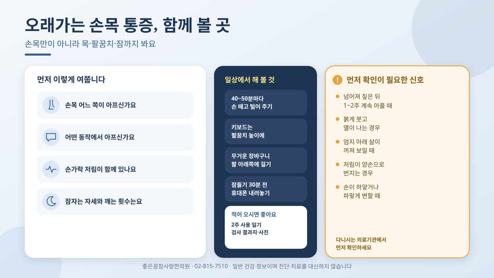

이종호 한의사 감수좋은꿈참사랑한의원 대표원장 (한의사 면허번호 19769)발행 2026-11-25 · 수정 2026-11-25
이 글의 차례
손목이 아파 정형외과 진료와 물리치료를 꾸준히 다니는데도 몇 주, 몇 달째 비슷한 통증이 이어지면 지치기도 하고 '내 손목만 왜 이럴까' 하는 마음이 들기 쉽습니다. 이럴 때 상담에서 함께 짚어 보는 것은 손목 하나가 아니라 손목에 영향을 주는 주변과 생활 전체입니다.
목에서 팔로 내려가는 신경, 손목을 움직이는 근육이 시작되는 팔꿈치, 하루 동안 손을 쓰는 시간과 자세, 잠자는 자세와 잠의 양, 피로와 호르몬 변화처럼 몸 전체의 리듬이 손목 통증과 얽혀 있는 경우가 많기 때문입니다.
지금까지 받은 진단과 검사, 치료는 그대로 중요한 출발점이어서, 다니시는 곳의 치료는 이어 가면서 결과지와 치료 기록을 가져와 함께 정리하는 방식을 권합니다. 다만 넘어지며 손을 짚은 뒤 엄지 아래쪽 통증이 계속되거나, 저림과 힘 빠짐이 점점 늘어난다면 생활 점검보다 확인이 먼저입니다.
왜 치료를 받아도 손목 통증이 오래갈 수 있을까요
- 손목은 하루에도 수천 번 움직이는 관절입니다. 치료를 받는 시간은 일주일에 몇 시간이지만 마우스와 키보드, 휴대폰, 육아, 집안일로 손목을 쓰는 시간은 하루에도 여러 시간이어서, 같은 동작이 이어지면 가라앉으려던 힘줄과 그 주변이 다시 자극받기 쉽습니다.
- 아픈 자리와 부담이 시작되는 자리가 다를 수 있습니다. 손목을 뒤로 젖히는 근육과 손가락을 펴는 근육은 팔꿈치 바깥에서 시작하고, 손목을 굽히는 근육은 팔꿈치 안쪽에서 시작합니다. 팔꿈치 주변이 뻣뻣하거나 예민하면 손목 쪽 힘줄이 더 많은 일을 떠맡게 됩니다.
- 손과 손가락의 감각을 맡는 신경은 목에서 나와 어깨, 팔꿈치, 손목을 거쳐 내려갑니다. 목에서 한 번, 손목에서 한 번처럼 신경이 지나는 길 두 곳 이상에서 부담을 받으면 한 곳만 살필 때보다 저림과 시큰함이 오래 남는 경우가 있는 것으로 알려져 있습니다.
- 잠은 하루 동안 쌓인 조직의 피로를 회복하는 시간입니다. 잠이 짧거나 자주 깨면 같은 자극에도 통증을 더 예민하게 느끼기 쉽고, 손목을 안으로 굽힌 채 베개 밑에 넣고 자는 자세는 손목 안쪽 신경 통로를 밤새 좁게 만들 수 있습니다.
- 출산 뒤나 갱년기처럼 호르몬이 크게 변하는 시기, 갑상선 기능이 달라지거나 혈당이 높은 상태에서는 힘줄과 신경 주변이 붓거나 예민해지기 쉬워 손목 통증과 저림이 함께 나타나는 경우가 있습니다.
- 긴장하거나 서두를 때 손에 힘을 꽉 주는 습관, 펜이나 마우스를 세게 쥐는 습관도 손목 주변 근육을 쉬지 못하게 합니다. 마음이 바쁜 시기에 손목이 더 아프다는 분이 적지 않은 이유입니다.
- 한의학에서는 같은 곳을 오래 쓰고 잠과 휴식이 부족할 때 근육과 힘줄을 적셔 주는 기혈이 부족해지고 잘 돌지 못하는 모습으로 살피기도 합니다. 그래서 손목만이 아니라 잠, 피로, 손발이 찬 정도, 마음의 긴장도 함께 여쭙습니다.
자주 하는 오해
- "손목이 아프면 손목만 문제"라고 여기기 쉽지만, 목과 팔꿈치, 어깨와 자세, 잠까지 함께 영향을 줄 수 있습니다. 손목 치료를 받는 것과 그 주변을 함께 살피는 것은 서로 부딪히는 일이 아닙니다.
- 검사에서 큰 이상이 없다는 말을 들으면 '내가 예민한 것일까' 하고 생각하는 분도 있습니다. 영상에 뚜렷이 보이지 않는 힘줄 주변의 예민함이나 사용 습관에서 오는 통증도 있어, 어떤 동작에서 아픈지 기록해 두는 것이 중요합니다.
- 보호대를 하루 종일 차고 있을수록 좋다고 여기기도 합니다. 진료에서 안내받은 시간과 상황에 맞춰 쓰는 것이 좋고, 필요 이상 오래 고정하면 손목이 굳고 주변 근육이 약해질 수 있습니다.
- 아플 때마다 손목을 꺾어 뚝 소리를 내거나 세게 젖히는 스트레칭으로 풀어야 한다고 생각하는 분도 있습니다. 예민해진 힘줄에는 이런 자극이 오히려 부담이 될 수 있어 부드럽게, 아프지 않은 범위에서 움직입니다.
- 이미 오래 아팠으니 이제는 어쩔 수 없다고 미리 포기하기도 합니다. 손을 쓰는 순서와 자세, 쉬는 간격, 잠자는 자세처럼 생활에서 조정해 볼 여지가 남아 있는 경우가 많습니다.

상황별 예시
- 예를 들어 하루 대부분을 모니터 앞에서 보내는 사무직이 오른쪽 손목 새끼손가락 쪽이 아파 물리치료를 다니는데, 오후가 되면 목과 어깨가 뻣뻣해지고 엄지와 검지 끝이 저린 경우입니다. 손목 자체와 함께 목에서 내려오는 신경 쪽을 같이 살펴볼 단서가 되며, 마우스 위치와 모니터 높이, 고개가 앞으로 나오는 자세를 함께 점검합니다.
- 예를 들어 아기를 하루에도 수십 번 안아 올리는 시기에 엄지 쪽 손목이 시큰해 치료를 받고 있지만, 밤중 수유로 잠이 서너 시간씩 끊기고 수유할 때 한쪽 손목을 꺾어 아기 머리를 받치는 경우입니다. 안는 방법과 수유 자세, 잠을 나눠 자는 방법을 가족과 함께 의논하는 것이 손목을 쉬게 하는 것만큼 중요할 수 있습니다.
- 예를 들어 주말마다 테니스나 골프를 치고 평일에는 무거운 프라이팬을 한 손으로 드는 분이, 손등 쪽 손목과 팔꿈치 바깥이 함께 뻐근한 경우입니다. 손목을 젖히는 근육이 시작되는 팔꿈치를 함께 살펴보고, 물건을 들 때 손바닥이 아래를 보는지 위를 보는지도 점검합니다.
- 예를 들어 잠들 때 손을 베개 밑에 넣고 손목을 안으로 굽힌 채 자는 습관이 있고, 새벽에 손이 저려 깨서 손을 털어야 다시 잠드는 경우입니다. 낮 동안의 사용 습관과 함께 잠자는 자세를 먼저 바꿔 보고, 저림이 이어지면 손목 안쪽 신경 통로를 확인해 봅니다.
- 예를 들어 양쪽 손목과 손가락 마디가 아침마다 한 시간 넘게 뻣뻣하고 붓는 경우에는 사용 습관보다 관절 염증 쪽을 먼저 확인해야 할 수 있어, 혈액 검사가 가능한 의료기관 진료를 함께 권합니다.
먼저 이렇게 여쭙니다
- 손목의 어느 쪽이 아픈지(엄지 쪽, 새끼손가락 쪽, 손등, 손바닥) 손가락으로 짚어 달라고 부탁드립니다.
- 병뚜껑 따기, 걸레 짜기, 문손잡이 돌리기, 바닥 짚고 일어나기, 타자 치기 가운데 어떤 동작에서 아픈지 여쭙니다.
- 손가락이 저린지, 저리다면 어느 손가락인지, 밤이나 새벽에 심한지 여쭙니다.
- 지금까지 받은 진단명과 검사(X선, 초음파, 신경 검사 등), 치료 내용, 치료 뒤 며칠 편했다가 언제 다시 아팠는지 여쭙니다.
- 일과 육아, 운동, 악기, 게임처럼 하루에 손을 쓰는 일과 대략의 시간을 여쭙니다.
- 목과 어깨, 팔꿈치에도 불편이 있는지, 고개를 돌릴 때 팔로 저림이 내려가는지 여쭙니다.
- 잠자는 자세와 잠드는 시각, 밤에 깨는 횟수를 여쭙니다.
- 최근 출산이나 생리 변화, 당뇨·갑상선 질환, 복용 중인 약과 요즘의 피로·긴장 정도를 함께 여쭙니다.
손목 밖에서 함께 살펴보는 것들
목과 어깨
- 고개를 앞으로 내밀고 오래 앉아 있으면 목 아래쪽에서 팔로 내려가는 신경 주변이 긴장하기 쉽습니다. 엄지와 검지 쪽 저림은 손목 안쪽 신경 통로에서 올 때와 목 아래쪽 신경에서 올 때 비슷한 자리로 느껴질 수 있어 둘을 함께 살핍니다.
- 어깨가 앞으로 말리고 날개뼈 주변이 굳으면 팔 전체가 몸 앞쪽에서 버티게 되어, 손목이 작은 동작까지 떠맡기 쉽습니다.
팔꿈치
- 팔꿈치 바깥을 눌렀을 때 아프거나, 주먹을 쥐고 손목을 뒤로 젖힐 때 팔꿈치까지 당기면 손목을 젖히는 근육 쪽 부담을 함께 봅니다.
- 새끼손가락과 약지 쪽이 저리다면 팔꿈치 안쪽을 지나는 신경을 함께 살핍니다. 팔꿈치를 오래 굽힌 채 휴대폰을 들고 있거나 팔꿈치를 굽힌 채 자는 습관이 영향을 주기도 합니다.
사용 습관
- 키보드를 칠 때 손목이 위로 꺾이는지, 마우스가 몸에서 멀어 팔을 뻗고 있는지, 휴대폰을 새끼손가락으로 받치고 엄지로만 오래 쓰는지 봅니다.
- 장바구니 끈을 손가락에 걸어 드는지, 프라이팬이나 냄비를 한 손으로 드는지, 걸레를 비틀어 짜는지처럼 집안일 속 동작도 함께 점검합니다.
잠과 몸 전체
- 잠의 길이와 깊이, 자는 자세, 아침에 일어났을 때 손이 뻣뻣한지를 봅니다.
- 피로와 스트레스, 손발이 찬 정도, 소화와 붓기처럼 몸 전체의 리듬을 진맥과 함께 살펴, 손목만 따로 떼어 보지 않으려 합니다.

일상에서 먼저 해 볼 수 있는 것
다니시는 곳에서 받은 운동이나 보호대 사용 안내가 있다면 그것을 먼저 따르고, 아래는 그와 부딪히지 않는 범위에서 해 볼 수 있는 것들입니다.
아침(일어나서 5분)
- 미지근한 물에 손을 1~2분 담가 데운 뒤, 주먹을 천천히 쥐었다 펴기를 10번 합니다.
- 팔을 몸 앞으로 편하게 내밀고 손목을 위아래, 좌우로 아프지 않은 범위에서 5번씩 천천히 움직입니다.
- 고개를 좌우로 천천히 돌리고 기울이며 각각 10초씩 머뭅니다. 이때 팔로 저림이 내려가는지 함께 느껴 봅니다.
일하는 동안(40~50분마다 1~2분)
- 타이머를 맞추고, 울리면 손을 키보드와 마우스에서 떼어 팔을 아래로 늘어뜨린 채 가볍게 털어 줍니다.
- 양쪽 날개뼈를 등 가운데로 5초씩 다섯 번 모으고, 턱을 살짝 당겨 목 뒤를 길게 합니다.
- 키보드는 팔꿈치 높이에 맞추고 손목이 위로 꺾이지 않게 하며, 마우스는 몸 가까이 당겨 어깨가 앞으로 나가지 않게 합니다.
- 휴대폰은 거치대에 두거나 양손으로 들고, 긴 글은 컴퓨터로 옮겨 씁니다.
물건을 들고 집안일을 할 때
- 가벼운 물건은 손바닥이 위를 보게 받쳐 들고, 무거운 장바구니는 손가락에 걸지 말고 팔 아래쪽이나 어깨에 걸쳐 나눠 듭니다.
- 프라이팬과 냄비는 두 손으로 들고, 걸레는 비틀어 짜기보다 눌러 짜거나 밀대를 씁니다.
- 아기를 안을 때는 손목만으로 들어 올리지 말고, 아기를 몸에 붙인 뒤 팔 전체와 몸통으로 받칩니다.
저녁(씻은 뒤 10분)
- 손목이 뻣뻣하고 무거운 날은 따뜻한 물수건으로 10분 데웁니다. 붓고 열감이 있는 날은 얇은 수건으로 감싼 냉찜질을 10~15분 하고, 어느 쪽이 편했는지 기록합니다.
- 팔을 앞으로 펴고 손바닥이 아래를 보게 한 뒤 다른 손으로 손등을 살짝 눌러 팔 위쪽이 당기는 느낌으로 15초, 손바닥을 위로 돌려 손가락을 살짝 젖혀 15초 머뭅니다. 저림이 올라오거나 날카롭게 아프면 멈춥니다.
잠자리
- 잠들기 30분 전에는 휴대폰을 내려놓아 손목과 눈을 함께 쉬게 합니다.
- 손을 베개 밑에 넣거나 손목을 안으로 굽힌 채 자지 않도록, 옆으로 누울 때는 작은 쿠션을 안아 손목이 곧게 놓이게 합니다.
- 밤 보호대는 진료에서 권유받은 경우에 안내받은 방식으로 씁니다.
- 잠드는 시각을 일정하게 하고 7시간 안팎을 목표로 합니다.
2주 사용 일기
- 하루를 마치며 손목 통증 점수(0~10), 가장 아팠던 동작, 손을 많이 쓴 일, 잠잔 시간을 한 줄로 적습니다. 2주만 모아도 어떤 날에 더 아픈지 흐름이 보입니다.
스스로 점검해 보세요
- 손목 통증과 함께 목이나 어깨가 자주 뻣뻣하다.
- 엄지·검지·중지 쪽이나 새끼손가락 쪽으로 저림이 있다.
- 팔꿈치 바깥이나 안쪽을 누르면 아프다.
- 키보드·마우스·휴대폰·육아처럼 손을 쓰는 시간이 하루 여섯 시간이 넘는다.
- 손목을 굽힌 채 자거나 새벽에 손이 저려 깬다.
- 잠이 6시간보다 짧은 날이 많고 피로가 쌓여 있다.
- 치료받은 날은 편하다가 다음 날 같은 일을 하면 원래대로 돌아간다.
해당하는 항목이 많을수록 손목 밖에서 함께 살펴볼 거리가 많다는 뜻입니다. 체크한 항목을 그대로 가져오시면 상담에서 어디부터 볼지 정하기 쉽습니다.
한의원에서 함께 살필 수 있는 경우
- 치료를 꾸준히 받고 있지만 손목 통증이 몇 주 이상 이어져, 손목 밖의 원인과 생활을 함께 정리해 보고 싶은 경우
- 손목 통증과 함께 목, 어깨, 팔꿈치가 같이 뻐근하거나 손가락 저림이 있는 경우
- 육아, 집안일, 일 때문에 손을 쉬기 어려워 손 쓰는 순서와 쉬는 간격을 함께 정하고 싶은 경우
- 손목 통증과 함께 잠이 얕고 피로가 쌓이며 손발이 찬 경우
좋은꿈참사랑한의원에서는 첫 방문 때 이야기부터 충분히 듣습니다. 언제부터 어떤 동작에서 아팠는지, 그동안 받은 진단과 검사, 치료가 무엇이었고 치료 뒤 어떻게 달라졌는지를 차례로 여쭙고, 가져오신 결과지가 있으면 함께 봅니다. 다니시는 곳의 치료는 그대로 이어 가시도록 하고, 일정과 치료 내용이 겹치지 않게 함께 정합니다.
이어서 맥부터 짚고, 혀와 배를 살펴 잠과 피로, 소화, 몸이 찬 정도처럼 몸 전체의 리듬을 확인합니다. 그다음 손목을 동작별로 움직여 아픈 자리를 확인하고, 손가락 감각과 쥐는 힘, 엄지와 다른 손가락으로 집는 힘을 양쪽 비교합니다.
손목에서 끝내지 않고 고개를 돌리고 젖힐 때 팔로 저림이 내려가는지, 어깨와 날개뼈가 어떻게 움직이는지, 팔꿈치 안팎을 눌렀을 때 예민한지도 함께 봅니다.
필요하다고 판단되면 초음파로 손목 힘줄과 힘줄을 감싸는 막, 손목 안쪽 신경 통로 주변을 양쪽 비교해 살펴보고, 팔꿈치 힘줄도 함께 볼 수 있습니다. 이미 받은 초음파나 영상 결과가 있다면 그것을 먼저 보고, 다시 볼 필요가 있을 때만 살펴봅니다.
뼈나 관절 안쪽, 신경 기능을 더 확인해야 한다고 판단되면 X선, MRI, 신경 검사가 가능한 의료기관을 안내합니다. 그 뒤 상태와 몸에 맞춰 침, 온열 치료, 목과 등의 추나 등을 신중하게 정하고, 체외충격파는 부위와 상태를 확인한 뒤 필요하다고 판단될 때만 씁니다. 다음 진료에서는 2주 사용 일기와 지난번 바꿔 보기로 한 습관부터 이어서 여쭙습니다.
보험 적용 여부는 방문 전 전화(02-815-7510)로 확인해 주세요.

얼마나 지켜보고 언제 상담할까요
- 사용 습관과 잠자는 자세 가운데 두세 가지를 골라 2~3주 바꿔 보며 사용 일기를 적습니다. 치료받는 날과 그렇지 않은 날의 점수 차이도 함께 봅니다.
- 2~3주 동안 습관을 바꿔도 통증 점수가 그대로이거나, 아픈 범위가 손목에서 팔꿈치·목으로 넓어진다면 상담을 받아 손목 밖까지 함께 정리해 보시길 권합니다.
- 통증이 3개월 넘게 이어졌다면 그동안의 검사 결과와 치료 기록을 한데 모아, 진단을 다시 확인할 필요가 있는지 다니시는 곳과도 상의해 봅니다.
- 저림이 점점 넓어지거나, 물건을 자주 놓치거나, 엄지 아래 살이 꺼져 보인다면 지켜보는 기간을 길게 두지 말고 먼저 확인합니다.
이렇게 기록해 오시면 상담이 쉬워집니다
- 손 사진에 아픈 자리와 저린 자리를 표시한 그림
- 아픈 동작 목록(병뚜껑, 걸레 짜기, 타자, 짚고 일어나기 등)
- 2주 사용 일기(통증 점수, 가장 아팠던 동작, 손 쓴 일, 잠잔 시간)
- 그동안 받은 진단명, 검사 결과지(X선·초음파·신경 검사 등), 받은 치료와 기간, 치료 뒤 변화
- 책상과 키보드·마우스 배치, 휴대폰을 쥐는 모습을 찍은 사진
- 보호대 사용 여부와 시간, 복용 중인 약과 영양제
- 최근 출산·생리 변화, 당뇨·갑상선 등 다른 질환
이런 증상은 먼저 확인이 필요합니다
- 넘어지며 손을 짚은 뒤 엄지 아래 손목 쪽 움푹한 곳을 누르면 아프고, 그 통증이 1~2주 넘게 이어지는 경우(처음 X선에서 보이지 않는 작은 손목뼈 골절이 있을 수 있어 다시 확인합니다)
- 손목이 붉게 붓고 뜨거우며 열이 나는 경우
- 엄지 아래 두툼한 살이 꺼져 보이거나, 단추 잠그기·젓가락질처럼 손끝을 쓰는 일이 점점 어려워지는 경우
- 저림이 양손으로 번지거나, 걸을 때 다리가 둔하고 휘청거리는 느낌이 함께 있는 경우
- 여러 손가락 마디가 함께 붓고 아침 뻣뻣함이 한 시간 넘게 이어지는 경우
- 손목의 혹이 빠르게 커지거나 단단하고 누르면 아픈 경우
- 손이 하얗거나 파랗게 변하고 차가워지며 저린 경우
이런 경우에는 생활 조정으로 지켜보기보다 다니시는 정형외과나 검사가 가능한 의료기관에서 먼저 확인하세요. 저림과 함께 갑자기 한쪽 팔다리 힘이 빠지거나 말이 어눌해지면 지체하지 말고 가까운 응급실을 찾습니다. 복용 중인 약은 처방한 의사와 상의 없이 줄이거나 끊지 않습니다.
관련 글
- 손목이 저리고 아플 때 어떤 동작을 먼저 묻고 무엇을 살펴보나요?
- 목에서 팔로 저림이 내려올 때(목디스크 의심)는 어떤 점을 먼저 확인하나요?
- 팔꿈치 바깥쪽이 아플 때(테니스엘보)는 어떤 동작을 먼저 묻나요?

여쭙는 것
- 손목의 어느 쪽이 아픈지(엄지 쪽, 새끼손가락 쪽, 손등, 손바닥) 손가락으로 짚어…
- 병뚜껑 따기, 걸레 짜기, 문손잡이 돌리기, 바닥 짚고 일어나기, 타자 치기 가운데…
- 손가락이 저린지, 저리다면 어느 손가락인지, 밤이나 새벽에 심한지 여쭙니다.
생활에서 해 볼 것
- 미지근한 물에 손을 1~2분 담가 데운 뒤, 주먹을 천천히 쥐었다 펴기를 10번 합…
- 팔을 몸 앞으로 편하게 내밀고 손목을 위아래, 좌우로 아프지 않은 범위에서 5번씩…
- 고개를 좌우로 천천히 돌리고 기울이며 각각 10초씩 머뭅니다. 이때 팔로 저림이 내…
한의원에서 함께 살필 것
- 치료를 꾸준히 받고 있지만 손목 통증이 몇 주 이상 이어져, 손목 밖의 원인과 생활…
- 손목 통증과 함께 목, 어깨, 팔꿈치가 같이 뻐근하거나 손가락 저림이 있는 경우
- 육아, 집안일, 일 때문에 손을 쉬기 어려워 손 쓰는 순서와 쉬는 간격을 함께 정하…
먼저 확인이 필요한 신호
- 넘어지며 손을 짚은 뒤 엄지 아래 손목 쪽 움푹한 곳을 누르면 아프고, 그 통증이…
- 손목이 붉게 붓고 뜨거우며 열이 나는 경우
- 엄지 아래 두툼한 살이 꺼져 보이거나, 단추 잠그기·젓가락질처럼 손끝을 쓰는 일이…
한눈에 보는 표
| 구분 | 핵심 |
|---|---|
| 여쭙는 것 | 손목의 어느 쪽이 아픈지(엄지 쪽, 새끼손가락 쪽, 손등, 손바닥) 손가락으로 짚어 달라고 부탁드립니다. 병뚜껑 따기, 걸레 짜기, 문손잡이 돌리기, 바닥 짚고 일어나기, 타자 치기 가운데 어떤 동작에서 아픈지 여쭙니다. |
| 생활에서 해 볼 것 | 미지근한 물에 손을 1~2분 담가 데운 뒤, 주먹을 천천히 쥐었다 펴기를 10번 합니다. 팔을 몸 앞으로 편하게 내밀고 손목을 위아래, 좌우로 아프지 않은 범위에서 5번씩 천천히 움직입니다. |
| 한의원에서 함께 살필 것 | 치료를 꾸준히 받고 있지만 손목 통증이 몇 주 이상 이어져, 손목 밖의 원인과 생활을 함께 정리해 보고 싶은 경우 손목 통증과 함께 목, 어깨, 팔꿈치가 같이 뻐근하거나 손가락 저림이 있는 경우 |
| 먼저 확인이 필요한 신호 | 넘어지며 손을 짚은 뒤 엄지 아래 손목 쪽 움푹한 곳을 누르면 아프고, 그 통증이 1~2주 넘게 이어지는 경우(처음 X선에서 보이지 않는 작은 손목뼈 골절이 있을 수 있어 다시 확인합니다) 손목이 붉게 붓고 뜨거우며 열이 나는 경우 |
자주 묻는 질문
다니던 정형외과나 물리치료는 그만두고 와야 하나요?
그만두실 필요는 없습니다. 다니시는 곳의 치료는 이어 가시면서 받은 진단과 치료 내용을 알려 주시면, 일정과 치료가 겹치지 않게 함께 정합니다.
손목이 아픈데 왜 목과 팔꿈치까지 보나요?
손가락과 손목의 감각을 맡는 신경은 목에서 내려오고, 손목을 움직이는 근육은 팔꿈치에서 시작합니다. 아픈 자리와 부담이 시작되는 자리가 다를 수 있어 함께 살펴봅니다.
보호대는 계속 차고 있어야 하나요?
진료에서 안내받은 시간과 상황에 맞춰 쓰는 것을 권합니다. 필요 이상 오래 차고 있으면 손목이 굳고 주변 근육이 약해질 수 있어, 언제 차고 언제 풀지 상담 때 함께 정합니다.
이미 초음파 검사를 받았는데 또 해야 하나요?
받으신 결과지를 먼저 보고, 다시 볼 필요가 있다고 판단될 때만 살펴봅니다. 결과지를 가져오시면 이전 결과와 비교하기 쉽습니다.
잠이 손목 통증과도 관계가 있나요?
잠이 짧거나 자주 깨면 같은 자극에도 통증을 더 예민하게 느끼기 쉽고, 손목을 굽힌 채 자는 자세는 밤사이 손목 안쪽 신경 통로에 부담을 줄 수 있습니다. 그래서 잠의 길이와 자는 자세도 함께 여쭙습니다.
좋은꿈참사랑한의원은 재진 때 지난번 이야기부터 이어서 여쭙니다. 진료시간과 예약은 오시는 길에서 확인하세요.
어디서 상담받을 수 있나요?
좋은꿈참사랑한의원은 서울 동작구 만양로2길 2 신성빌딩 3층·5층(서울 동작구 상도동, 7호선 상도역 3번 출구 근처)에 있습니다. 한의사 3명(이종호 대표원장, 조영기 수석진료원장, 정원영 진료원장)이 진료합니다. 진료시간은 평일 09:30~20:00(점심 13:00~14:00), 토·일·공휴일 09:30~15:00이며, 방문 전 전화로 확인을 권합니다. 예약은 네이버 예약, 카카오톡 상담, 전화 02-815-7510로 받습니다.
이 글은 일반적인 건강 정보이며 개인의 진단이나 치료를 대신하지 않습니다. 증상이 있거나 복용 중인 약이 있다면 진료를 통해 확인하세요. 치료 효과는 개인마다 다를 수 있습니다.
작성 기준: 일반적으로 알려져 있는 건강 정보를 참고해 정리했습니다(대표원장 감수). 증상 기록은 1~2주 동안 하루 1회, 비슷한 시간에 적어 오시면 지난 상태와 비교하기 쉽습니다.